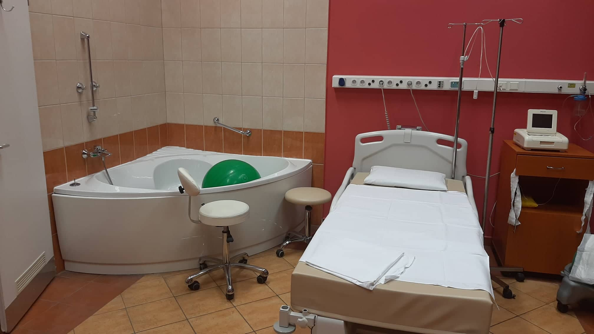
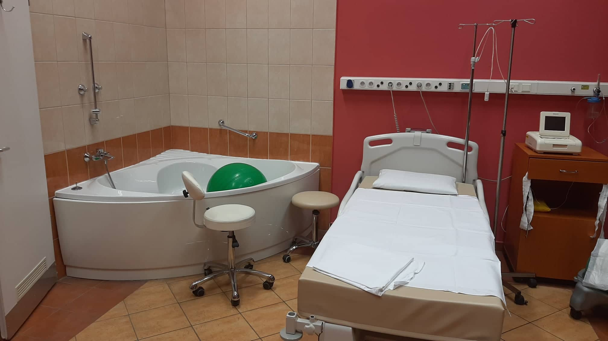

Kórházi háttér
Mind a műtéteket, mind a szülések levezetését a Szent János Kórházban végzem. A nőgyógyászat a 11-es épület 1. és 2. emeletén található. Az épületnek két bejárata van, 19 óra után már csak az udvar felöli ajtón lehet közlekedni csengetést követően.
 

Megközelíthetőség
A Széll Kálmán tér felöl a Szilágyi Erzsébet fasoron át a Főbejárat előtt elhaladva a Diós árkon felfelé haladva a legelső sorompónál lehet behajtani és rögtön ott jobb oldalon található a Szülészet-Nőgyógyászat épülete.
A Széll Kálmán térről a 61-es, illetve 56-os villamossal 3 megálló, illetve a 128-as, vagy 22A buszokkal 2 megállót kell utazni. A Főbejáraton át balra elindulva felfelé haladva érheti el épületünket.